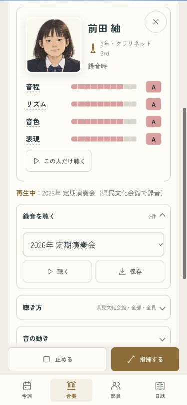
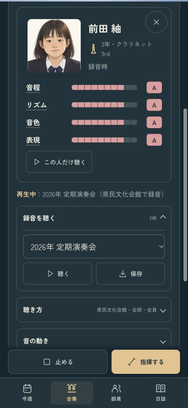

昔の録音に、あの部員がいる
卒業して何年たっても、録音したときの顔が舞台に出ます。タップすると当時の名前・学年・楽器・ランクが見られ、その人だけの音も聴けます。
同じ部員が今は別の名前や楽器になっていても、録音の中は当時のまま。昔のカードには名前変更や席移動を出しません。
2026年と2027年の録音を試す · 確認記録
確認例では2031年の部から昔の録音を再生しています。「録音を聴く」で年を選んで聴き、舞台の顔をタップしてください。いつものセーブは変わりません。
375px・ライト
ダーク